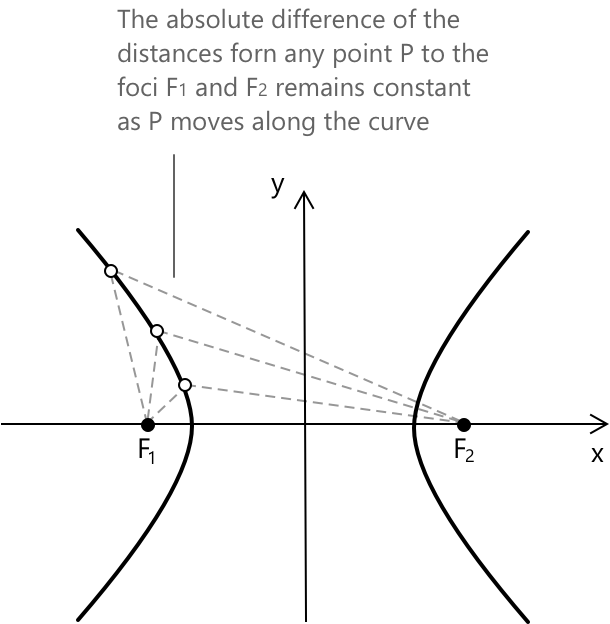
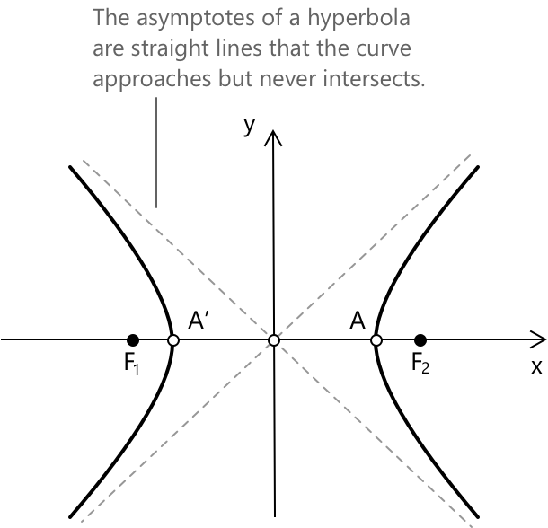
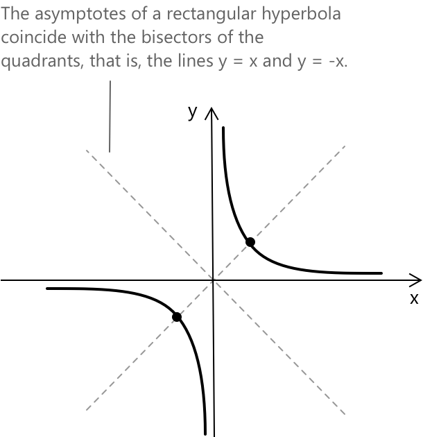
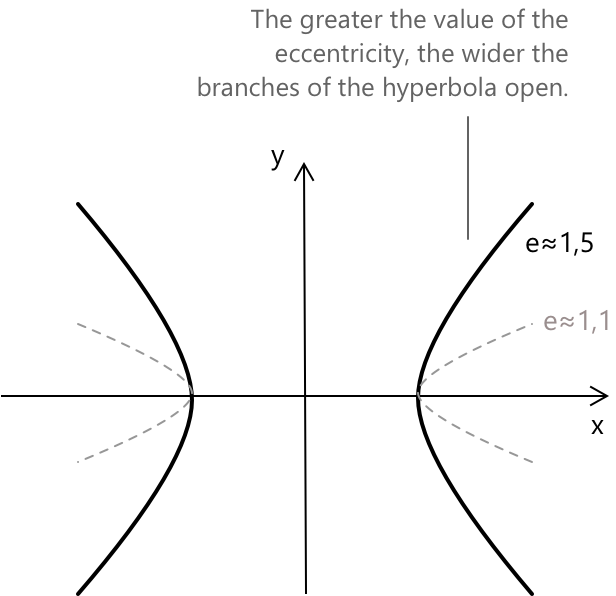

Гіпербола
Вступ до конічних перетинів
При означенні параболи ми бачили, що коли площина перетинає конус, отримана фігура, при проєкції на площину, може бути окружністю, параболою, еліпсом або гіперболою. Ці криві разом називають коніками. Більш формально, коніка — це алгебраїчна крива другого степеня на площині. Вона визначається як множина точок \( (x, y) \in \mathbb{R}^2 \), що задовольняють загальне квадратне рівняння зі змінними \( x \) та \( y \):
\[ f(x, y) = a_{11}x^2 + 2a_{12}xy + a_{22}y^2 + 2a_{13}x + 2a_{23}y + a_{33} = 0 \]
Тут коефіцієнти \( a_{ij} \in \mathbb{R} \), і щоб крива була дійсно квадратичною, ми вимагаємо, щоб і \( a_{11} \), і \( a_{22} \) були ненульовими.
Що таке гіпербола
Дано дві фіксовані точки на площині, \( F_1 \) та \( F_2 \); гіпербола визначається як множина всіх точок \( P \), таких що абсолютне значення різниці відстаней від \( P \) до кожного фокуса є сталою. Іншими словами:
\[ \left| PF_1 – PF_2 \right| = \text{стала} \]

\(F_1\) та \(F_2\) — це фокуси гіперболи. Середина відрізка \( \overline{F_1F_2} \) називається центром (який на рисунку збігається з початком координат Декартових осей). Середина відрізка \( \overline{F_1F_2} \) називається центром.
Тільки вісь x (яку також називають фокальною або поперечною віссю) перетинає гіперболу у двох дійсних точках: \( A(a, 0) \) та \( A’(-a, 0) \), відомих як вершини. Вісь y не перетинає гіперболу і називається неперепоперечною віссю.

Асимптоти гіперболи — це прямі, до яких крива наближається, але ніколи не перетинає. Вони представляють напрямки, вздовж яких гілки гіперболи простягаються до нескінченності. У випадку стандартної гіперболи з центром у початку координат, асимптоти задаються рівняннями:
\[ y = \pm \frac{b}{a}x \]
Зі збільшенням \(|x|\), \(|y|\) також збільшується, і крива стає нескінченно ближчою до асимптот.
Коли \( P \) лежить на одній із двох вершин, наприклад, \( (a, 0) \), різниця відстаней від \( F_1 \) та \( F_2 \) становить рівно \( 2a \), і це значення залишається сталим для всіх точок гіперболи. Отже, маємо:
\[ \left| \overline{PF_1} – \overline{PF_2} \right| = 2a \]
У стандартному вигляді гіпербола з центром у початку координат і горизонтальною поперечною віссю описується рівнянням:
\[ \frac{x^2}{a^2} - \frac{y^2}{b^2} = 1 \]
де \(b^2 = c^2 – a^2\), при \(b > 0\) та \(c > a\), з чого випливає, що:
\[ c = \sqrt{a^2 + b^2} \]
Чому різниця відстаней до фокусів у гіперболі завжди стала?
Тому що саме це її визначає. Гіпербола — це множина всіх точок, для яких абсолютна різниця відстаней до двох фокусів дорівнює рівно \( 2a \). Будь-яка точка, що не задовольняє цю умову, лежить поза кривою і не належить до гіперболи.
Прямокутна гіпербола
Якщо в канонічному рівнянні гіперболи маємо \( a = b \), така гіпербола називається прямокутною гіперболою. Ця умова робить асимптоти перпендикулярними, утворюючи прямі кути. Коли фокуси лежать на осі \( x \), рівняння прямокутної гіперболи набуває вигляду:
\[ \frac{x^2}{a^2} – \frac{y^2}{a^2} = 1 \quad \rightarrow \quad x^2 – y^2 = a^2 \]

На Декартовій площині бісектрисами квадрантів є дві прямі \( y = x \) та \( y = -x \), які симетрично поділяють простір відносно осей.
Ексцентриситет
У гіперболі ексцентриситет визначається як відношення відстані від центру до фокуса \( c \) до піввисоти поперечної осі \( a \). Це значення характеризує розкриття гіперболи і завжди більше за 1, отже \( e > 1 \). Тобто:
\[ e = \frac{c}{a} = \frac{\sqrt {a^2 + b^2}}{a} \]

Ексцентриситет описує, наскільки розкрита гіпербола. Коли \( e = 1 \), гілки гіперболи відносно вузькі. У міру зростання \( e \) фокуси віддаляються від центру, і гілки розкриваються ширше. Ексцентриситет не залежить від розміру гіперболи, а залежить від відношення відстаней: це чиста міра форми.
Міст між круговою та гіперболічною тригонометрією
Рівностороння гіпербола відіграє центральну роль у гіперболічній тригонометрії. Подібно до того, як кругові синус і косинус визначаються за допомогою одиничного кола, гіперболічний синус і косинус виникають з геометрії гіперболи: \[ x^{2} - y^{2} = 1 \] Тут гіперболічний сектор визначає параметр \(x\), і точка \(P\) на гіперболі, пов'язана з цим сектором, має координати: \[ P_{x} = \cosh(x) = \frac{e^{x} + e^{-x}}{2} \] \[ P_{y} = \sinh(x) = \frac{e^{x} - e^{-x}}{2} \] Ця паралель між колом і гіперболою чітко показує, що кожна крива породжує свій власний вид тригонометричної поведінки. Знайомі кругові функції мають свої гіперболічні відповідники, і ці дві системи поєднуються таким чином, що підкреслює спільну геометричну ідею, що лежить в основі обох конструкцій.